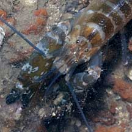
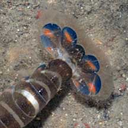
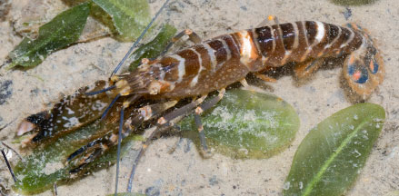
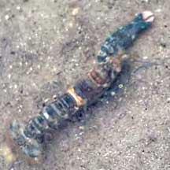
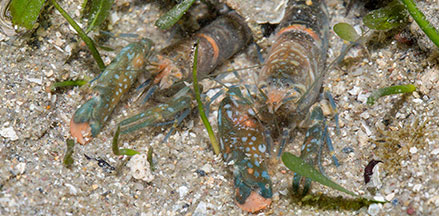
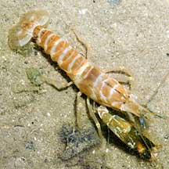

|
|
| shrimps text index | photo index |
| Phylum Arthropoda > Subphylum Crustacea > Class Malacostraca > Order Decapoda > prawns and shrimps > Family Alpheidae |
| Many-band
snapping shrimp awaiting identification* Family Alpheidae updated Dec 2019 Where seen? This snapping shrimp with a long body and many bands is rarely seen. On coral rubble near reefs. Features: 4-6cm long. Body long, narrow with many pale narrow bands. Some have one or two more prominent white or orange bands. These snapping shrimps are often seen with shrimp gobies such as the Slender-lined shrimp-goby (Cryptocentrus leptocephalus) and Saddled shrimp-goby (Cryptocentrus maudae). |
 Beting Bronok, Jul 08 |
 |
 |
*Species are difficult to positively identify without close examination.
On this website, they are grouped by external features for convenience of display.
| Many-banded snapping shrimps on Singapore shores |
On wildsingapore
flickr
|
| Other sightings on Singapore shores |
 Changi Creek, Jul 23 |
||
 St. John's Island, Apr 21 Photo shared by Richard Kuah on facebook. |
||
 Next to its moult (with tranparent eyes). Cyrene Reef, Aug 18 Photo shared by Marcus Ng on facebook. |
 (Alpheus sp. undescribed) Pulau Semakau, Sep 05 |
| Acknowledgement Grateful thanks to Dr Arthur Anker for identifying this shrimp. |